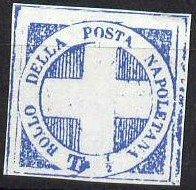
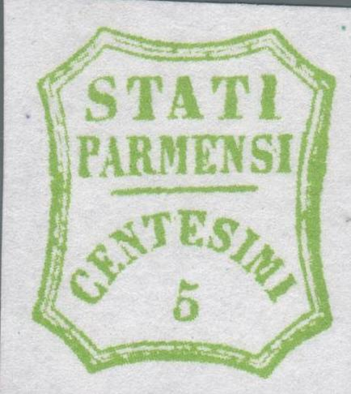
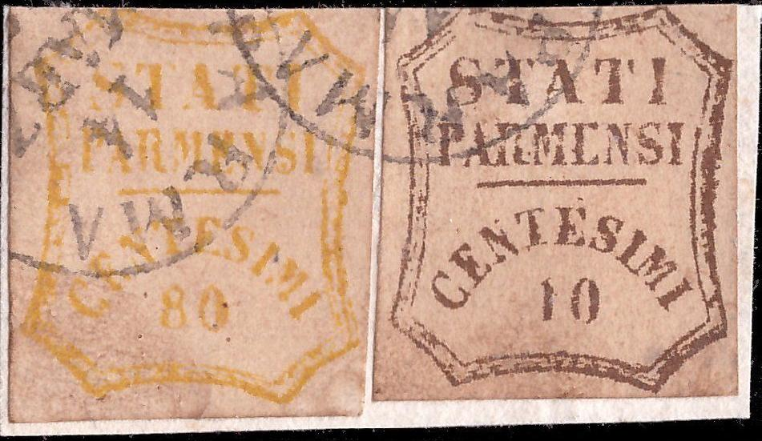
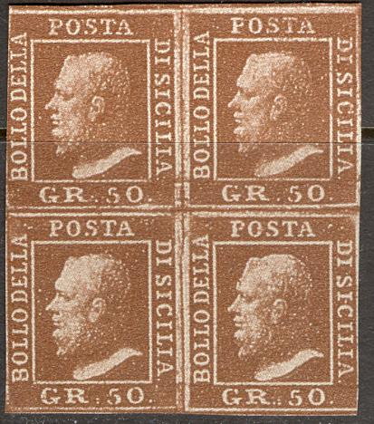
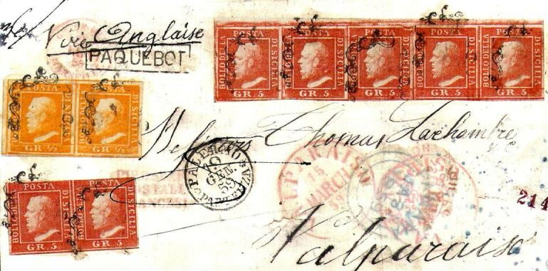

Rather crude "TASSA GAZETTE" forgery
Return To Catalogue - Italy - Austrian Italy modern forgeries
Note: on my website many of the
pictures can not be seen! They are of course present in the
catalogue;
contact me if you want to purchase the catalogue.
I have seen many forgeries of the old Italian States, printed on very white paper or also on slightly yellowish paper sometimes with very large margins. They are offered on Ebay and other online auctions in large quantities (2005) under the title 'ristampe' (reprints) or 'tappabuchi'. Some design errors nevertheless occur in most of these forgeries. I do not know who made these forgeries. They seem to have been made somewhere in the 1960s (probably in Italy as the source from where these forgeries are marketed is in most cases this country, if my information is correct in Treviso). If anybody has more information, please contact me!
I will give some examples of these forgeries here:
Click here for modern forgeries of Austria and Lombardy-Venice (most probably made by the same forger).
Rather crude "TASSA GAZETTE" forgery
Another different forgery (made by the same forger?) exists on yellowish paper.




Two modern forgeries of the Papal States, 50 b and 1 S, reduced
sizes
Another forgery of the 1 Sc value of the Papal States (quite different from the above one) is shown below. At first sight it does not belong in this category it is often offered together with other modern forgeries of the Italian States. The paper is very yellow (even more yellow than in the scan) and the ink is pinkish and appears not to be very sharp; this is so since the image consists of microscopic dots when viewed under a magnifying glass. Usually it is offered in uncancelled condition, but it also exists with cancel (probably a bogus cancel) as shown here:

Forgery of the 1 Sc Papal States stamp


reduced sizes
The above modern forgeries of the 5 c yellow, 15 c red and 25 c brown are offered in large quantities on Ebay (2005). I haven't seen any modern forgeries of the other values. Note the extremely large margins around the stamps. I've seen 4 values of the 5 c yellow, 4 values of the 15 c red and 4 values of the 25 c brown printed on one sheet, each value arranged in four as shown above, and with a large vertical space (about 3 times the distance between the indiviual stamps above) between the stamps of different value.
I have seen many 'modern' forgeries of all values of the 1859 issue of Parma. They are generally printed on very white paper. The shown breaks and errors are always identical (for each individual value). Usually they are uncancelled, though I have seen them with cancel (see next image). Of the shown 40 c two colours exist: red and orange. The 5 c also exists in two colours: light and dark green.
 


Modern forgeries of the 1859 issue of Parma

With the forged "PARMA 14 MARZ 58" cancel.
I've seen 'proofs' (inscription 'Saggio' at the bottom) of the stamps of Romagna. They have many more framelines than the genuine stamps. Since they are often offered together with the forgeries described here, I presume they originate from the same source. I've seen them in black, but also in light green (probably all values). Sorry, no pictures available yet.
In this forgery of the 40 c value of the 1851 issue, there is
always a white dot between the "L" and "O" of
"BOLLO"
Modern forgeries of the 5 c value of the 1851 issue, offered as
'reprints' on Internet auctions (2005); the paper is very white,
there are some white dots behind the head of the King


I presume the next forgeries of Sicily are coming from the same source, since they are often offered together with the above forgeries.

So-called 'reprints', actually some kind of photograph or
photo-lithographed forgery

A forgery with cancel, possibly from the same source

Especially these forgeries with cancels are quite deceptive.
I possess the values 1 q, 1 s, 1 c, 2 c, 6 c and 9 c of this particular forgery. The 2 s, 4 c and 60 c also exist (see images above). In all those values a white dot can be found between the crown and the 'A' of 'POSTALE'. Also, the line below the value inscription is continuous. They are printed with very large margins in between the stamps (about 1/2 the size of the stamp). The above forgeries don't have any watermark.
Tuscany, forgeries of the 1860 issue:


There seems always to be a white dot in the frameline above the
'P' of 'POSTALE'; these forgeries have a printed(?) watermark

1863 Postage due stamp forgery
I suspect this forgery of the 15 c 1863 stamp of Italy to be forged by the same forger:
Italy King Victor Emanuel II, 1863 15 c
issue forgery, probably made by the same forger
A whole set of forgeries of essays:
Apparently, these forgeries were based on essays. The original essays are shown in the book 'Kurzgefasste Beschreibung der Essays-Sammlung von Martin Schroeder Leipzig' from A.Reinheimer 1903 as picture #370 (10 c) and #371 (20 c). In this book an essay collection of a certain M.Schroeder is shown, which was build up from 1893 to 1902. If I'm well informed the original essays are called 'Bradburry essays'.
These forgeries are often offered together with more modern forgeries, for example the 1918 issue of Merano or the stamps of Fiume:

Merano 'modern reprints'
Also forgeries of more modern stamps, such as the 'K2' stamp, the 300 L bicycle stamp, a 1953 Antarctica expedition stamp, the 1951 Trienale di Milano, a 205 L visit of the president of Peru commemoration (with aeroplane) and partizan labels are offered together with the above forgeries.
Even fiscal stamps of 1924 are forged (possibly by the same forger as well, since they are also often offered together):

1924 fiscal stamp forgery

Forgery of a misprint.

A whole sheet with Modena, Naples and Papal States 50 b and 1 Sc
forgeries, proving they were all made by the same forger. Note
the very large margins between the stamps.
Forgeries - Falsi - Faux - Fälschungen
{kind=link}
{kind=link}
{kind=link}